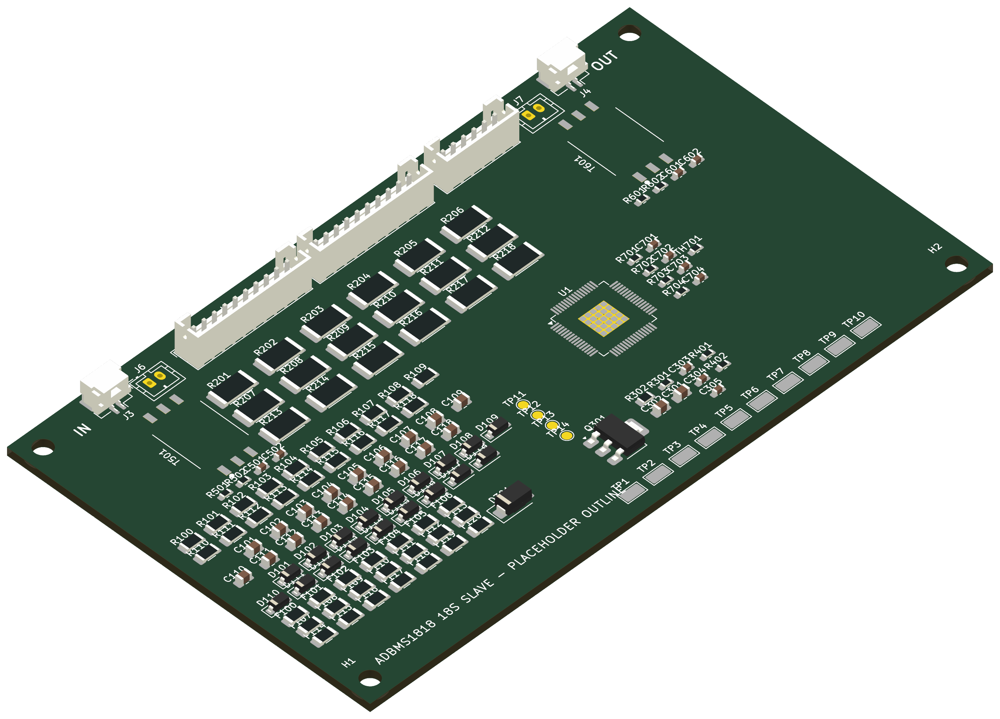
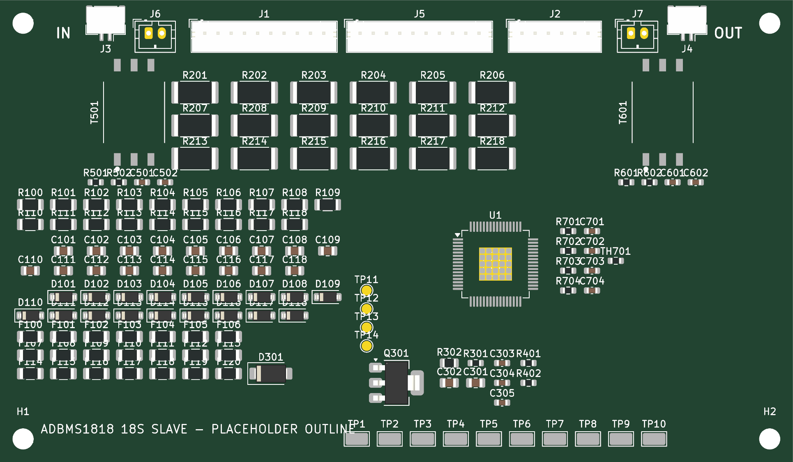

Q301 copper
Is 52 × 52 mm of collector copper realistic on this board, or should the drop be shared with a bigger R302?
Update · November 6, 2026
An ADBMS1818 cell monitor for 18 Li-ion cells, with passive balancing and an isoSPI daisy chain to a separate master. The schematic is complete for a first bench board, with hot-plug protection and test points. The isoSPI ports now use the same JST GH plug as the bought ENNOID master, the connector row and mounting holes are placed, and the master's public firmware should drive the chip as an LTC6813-1. Next come the rest of the placement and routing.

01 / Progress
Values from the ADBMS1818 typical application (Figure 112), plus isoSPI noise filtering and thermistor setup from a working reference board. Every deviation is written down with its reason.
ADBMS1818 symbol built from the datasheet pin table (65 pins, 0 mismatches). Transformer and NPN pad numbering checked against the manufacturers' drawings.
Every part has a value, footprint and JLC part number. ERC is clean, and a script checks all 272 pins against the wiring table.
All 90 footprints imported and grouped by block: cell inputs, balancing, supply, isoSPI A/B and connectors. Every pad's net matches the schematic.
Track widths per net type and spacing for up to 75.6 V between cells far apart in the stack, taken from IPC-2221B, plus a creepage gap across the isoSPI transformers.
A 250 mA fuse on every cell tap, a 6.8 V zener across each cell input pair, an 85 V TVS on the supply, 14 test points and 4 mounting holes, following ADI's own slave reference design (AN-2093). 58 parts, all checked into the PCB.
The ENNOID master's public firmware sends only commands that match the ADBMS1818 datasheet when set to LTC6813-1, so no custom firmware is expected. It leaves the spare GPIO pull-downs off, so GPIO5–9 are now tied to V− instead of floating. A bench test with one slave is the real proof.
J3/J4 are now JST GH 2P like the master, with not-fitted JST PH footprints J6/J7 beside them for a PH header or bare wires. All connectors sit in one row centred on the top edge, IN on the left and OUT on the right, each transformer about 5 mm from its plug, and a mounting hole in every corner.
The rest of the placement in Board Boxes, the real board outline, copper for heat, then traces.
A resistor-ladder cell simulator and isoSPI dongle on the bench, a carrier for two slaves on the Funwheel harness, then the master in its own box.
02 / The board today

No traces yet (265 connections to route). The 120 × 70 mm outline is a placeholder; only the connector row, transformers and holes are placed, the other groups are rough. Port A's transformer sits about 5 cm from U1, which routing will have to handle. DRC has 0 errors; only silkscreen warnings and the unrouted connections remain.
03 / Part choices
An 18-cell monitor with isoSPI and internal balance switches (4 Ω typ, 10 Ω max). The exposed pad is V− and must be soldered. The symbol was built from the datasheet pin table, and the netlist was checked pin by pin.
The chip ↗Corrected on Nov 6: the balance current also flows through the next cell's 10 Ω filter resistor (datasheet Fig. 99), so it is about 89 mA, 0.26 W each at 4.2 V, 26 % of the rating. All 18 at once is about 6.7 W, so firmware should balance odd and even cells alternately. The die thermal budget is still open.
Sizing table ↗Drops the stack to the 5 V VREG: about 1.4–1.6 W at 75.6 V. Its 3 W rating holds on 52 × 52 mm of 2 oz collector copper (junction ≈ 92 °C at 1.6 W), so placement must leave it a large copper area. Reviewed and kept on Nov 6. A DPAK part is the fallback.
Decision and numbers ↗The datasheet's HX1188FNL is rated only about 60 V working, and adjacent 18S modules sit about 76 V apart. The HM2113ZNL has a built-in choke and is AEC-Q200. The 2 × 51 Ω split termination and 10 nF centre-tap caps keep the link working while the motor runs.
Transformer notes ↗Two 10-pin cell-tap headers sharing C9, so each harness half keeps its own reference, and a 6-pin header for three cell NTCs. The friction lock may need RTV against vibration.
Connector pinout ↗The bought ENNOID master uses JST GH 2P for isoSPI, so J3 (in) and J4 (out) are now SM02B-GHS-TB side-entry headers and its cable plugs straight in. GH is rated 50 V, which only has to hold the small signal between its two pins; the 2 mm isolation gap on the PCB holds the rest. J6/J7 are JST PH footprints wired in parallel and left empty, for a PH header or two soldered wires.
Connector notes ↗The harness pins mate in random order, and the chip allows only 8 V between neighbouring cell inputs. A 6.8 V zener across each pair keeps it there. A 250 mA fuse on every tap means a shorted part or a slipped scope probe can't pull pack current through the board. The top and bottom supply get their own fuses, so the chip's current doesn't show up as error on cells 1 and 18. An 85 V TVS protects V+ and the regulator NPN. The 10 Ω filter resistors moved to 1206 because they carry the balance current.
Protection and sources ↗100 kΩ pull-up to VREF2 and 100 nF on each GPIO. Three cell NTCs on GPIO1–3 and one onboard 0603 NTC on GPIO4.
Deviations ↗04 / Review focus
Is 52 × 52 mm of collector copper realistic on this board, or should the drop be shared with a bigger R302?
18 × ~89 mA through the internal switches, about 6.7 W on the board: the die budget, and whether external MOSFETs are needed.
IN sits at the far left, so port A's pair runs about 5 cm to U1 and must get past the cell-tap traces without crossing them. Is that acceptable, or should U1 move?
Are the tap fuses, zener clamps and TVS enough for plug-and-play? And the pin order against the Funwheel pack.
Morale department
The penguins are not allowed near the balance resistors.
05 / Feedback
Name the part or board area and say what you'd change or check. If you drew boxes in Board Boxes, paste its copied prompt. GitHub opens a feedback form, so your notes stay with the project.
Open feedback form ↗You need a GitHub account to submit an issue. Please don't include private or personal information.Engineering draft. Nothing here is validated for manufacture or for use on a real pack.